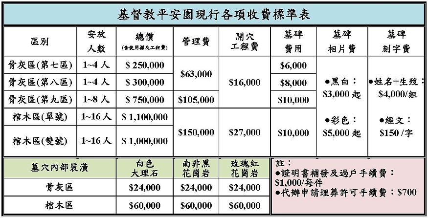
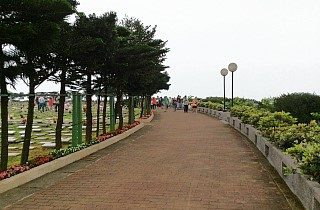
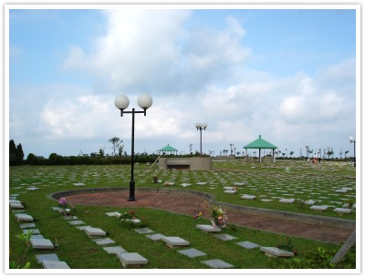
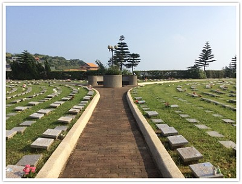

現行各項收費標準
將原網站圖片公告整理為可讀表格，方便家屬快速比較。
查看本站收費頁 →平安園座落於新北市金山，鄰近朱銘美術館。從園區可遠眺金山灣、翡翠灣、野柳與基隆嶼，讓每一次追思都能在山巒與海景之間，保有對生命的感念。
感念故人之餘，也能深刻體會到上帝造物的美妙及生命的意義。
— 平安園原網站文字從園區實景、鳥瞰圖到墓區導覽，先認識平安園的環境，再依最新公告安排前往。



平安園的籌設始於基督教團體對專屬追思園地的長期盼望。
七星中會、台北中會與董事會先後成立籌設公墓小組，尋找合適的基督教追思園地。
北區公墓小組成立，展開多次會議、土地評估與實地勘察。
完成命名、登記與開幕前準備。
雨霧、雷電與蚊蟲較多時，請攜帶雨具與防蚊用品；遇雷電請儘早進入涼亭等安全處所。
請節約用水並維護公廁整潔。追思時除鮮花與小盆栽外，請勿放置其他物品。
班次與票價會受季節、路況影響，請出發前查看最新公告。
若您想了解園區、交通、參觀、收費或相關申請流程，歡迎與服務中心聯繫。